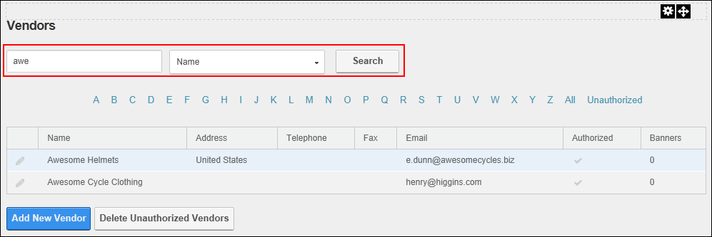

Searching Vendors by Company Name
How to search for vendors by all or part of the beginning of their company name on the Vendors module.
- Navigate to Admin > Advanced Settings >
 Vendors.
Vendors.
- In the Search text box, enter all or part of the Vendor's company name.
- Select Name from the drop down list.
- Click the Search button. This displays the first ten (10) matching records listed alphabetically by name. If there are more than ten matching records, then the Pager Control is displayed allowing you to access the other records.

Search for a Vendor by the Company Name